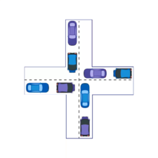

Home

VARIOUS ALGORITHMS
ROUND ROBIN PROCESS SCHEDULING ALGORITHM
Round-robin is an algorithm employed by process and network schedulers in computing. As the term is generally used, time slices are assigned to each process in equal portions and in circular order, handling all processes without priority.
Explore Video Simulator

BANKER'S ALGORITHM FOR DEADLOCK ALGORITHM
It is a banker algorithm, which is used to avoid deadlock and allocate resources safely to each process in the computer system. As the name suggests, it is used mainly in banking system, to determine if a loan can be sanctioned to a person or not.
Explore Video Simulator